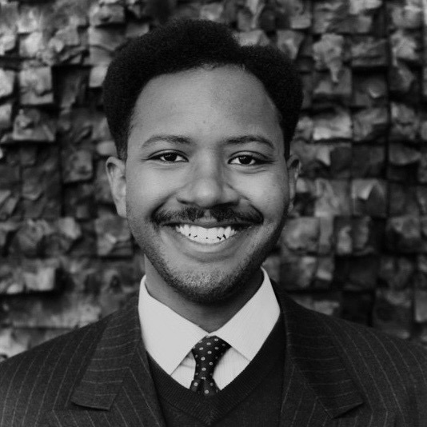

Justin Hadad is in the final year of his economics D.Phil. at the University of Oxford, where he studies as a Rhodes scholar. He researches how rules and institutions structure economic interaction. He is currently a visiting researcher at Stanford University’s economics and engineering departments, and has experience across the technology, nonprofit, and public sectors.
Imagined Economies
Imagined Economies is a political-economic advisory providing bespoke, in-depth analyses of policy proposals for the future of the American economy. Our core belief is that societal change requires imagination buttressed by analytical tools that consider heterodox policies and institutional designs. In partnership with individuals, nonprofits, and policymakers, we use our expertise and experience across research, politics, government, and academia to rigorously analyze policies — and deliver insights for both specialized and general audiences.
Email team@imaginedeconomies.com with a short note about your project or request.

Charles Wallace-Thomas IV is a Senior Fellow at the Open Environmental Data Project. Previously, he held appointments at the White House Office of Environmental Justice as the Senior Advisor for Justice40, and the U.S. Department of Energy as an Energy and Economic Justice Policy Fellow. He has worked at the Center for Economic Democracy, the Participatory Budgeting Project, and the Boston Ujima Project. He holds a B.S. in Economics from Northeastern University.
Michael Wakin is in the final year of his international relations D.Phil. at the University of Oxford, specializing in understanding how political and social forces shape countries’ recovery from economic crises. He is currently a visiting scholar at the CUNY Grad Center’s Ralph Bunche Institute and consults for a geopolitical and macroeconomic advisory firm. Previously, he has worked as an analyst at the U.S. Department of the Treasury and journalist for The Associated Press.